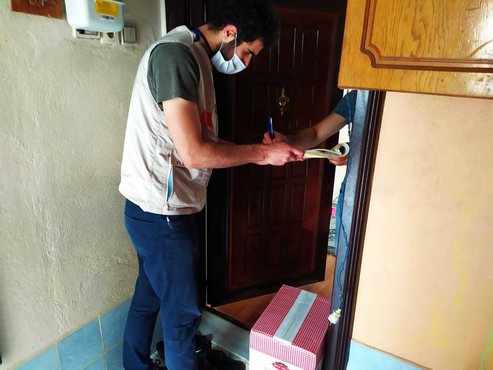

العمل التطوعي

IHH بدأت العمل كمتطوع مع هيئة الإغاثة الإنسانية وحقوق الإنسان والحريات
في اواخر عام 2016 كانت وظفيتي حينها المساعدة في توزيع السلات الغذائية على العائلات المحتاجة
توزيع المساعدات
نجول بالسيارة على بيوت العائلات التي قامت بالتسجيل في المنظمة للحصول على المساعدة والتي تمت
دراسة حالتها وقيّمت على ان لها الاولوية في تلقي المساعدة وكنا نزود بقائمة فيها معلومات عنهم
كعناوينهم وارقام هواتفهم كنت اعمل عدة ساعات بالاسبوع بحسب الحاجة وعند طلبهم لي اغلب الاوقات
بعدها اصبحت اتردد الى الجمعية اكثر من دون انتظارهم استدعائي اجلس هناك اراقب ألية سير العمل
واقدم المساعدة في اي شيء استطيع تقديم المساعدة فيه
استقبال طلبات المحتاجين للحصول على المساعدة
كان ياتي للجمعية محتاجين من المهاجرين السوريين
والعراقيين وغيرهم من العرب وقسم كبير منهم لا يتحدث التركية كنت اساعد بالترجمة عند تقديم
طلباتهم للحصول على المساعدات بعد فترة اصبحت انا ايضا اتلقى الطلبات واجمع معلومات
المتقدمين واقدمها للمسؤولين
زيارة العوائل المحتاجة والتحقق من حالتها
بعد فترة اصبحت اذهب مع الفريق الذي يزور العوائل المتقدمة للحصول على المساعدة
نتفقدهم ونتحقق من المعلومات التي قدموها لنا كوضعهم المادي وحوائجهم فبعضهم كان يطلب اثاثا لمنزله
كاريكة او براد او غسالة او غاز وما الى ذالك لانه لايملك وليس لديه المال الكافي للشراء
او لان الذي لديه لم يعد قابل للاستخدام فكنا نتحقق من هذه المعلومات ونرى ونقيم اولويته للحصول على
هذه المساعدة وان توفر لدينا ما يطلب نساعد فاحيانا كانت بعض العوائل الميسورة تتبرع باثاث و اجهزة كهربائية
كنا ناخذ هذه التبرعات ونضعها في المستودعات الخاصة بالجمعية ونتفقد قائمة المحتاجين ونعطي كل محتاج
ما توفر من حاجاته بعض المحتاجين كنا نساعدهم لمرة واحدة فقط وبعضهم نتردد عليهم شهريا او ربما اكثر من مرة
في الشهر الواحد بحسب الحالة
قسم الصحة
احيانا كان يراجع الجمعية بعض المرضى المحتاجين لبعض الادوية او الادوات الطبية
التي لا توفرهم الدولة لهم كاجهزة السمع ومحتاجين الاطراف الاصطناعية وبعض مرضى السرطان من اللاجئين
الذين لا يشمل تامينهم الصحي هذا النوع من الادوية واحيانا كان يراجعنا من لا يتقن التركية لمساعدتهم في المشافي
كنا نساعد الحالات المستعصية التي يستحيل على المرضى متابعتها بنفسهم حيث في اغلب الاحيان
تتطلب مراجعات اسبوعية او شهرية والانتقال من قسم الى اخر كاخذ التحويلة من طبيب العائلة والذهاب الى
الطبيب المختص ومراجعة المخابر ووو
بعض الحالات التي تابعتها
مع تفشي وباء كورونا، فُرض حظر التجوال في تركيا، كما هو الحال في معظم دول العالم
مما أدى إلى توقف معظم العمال في مختلف القطاعات عن العمل. وقد شكّل ذلك عبئًا كبيرًا على الدولة في تأمين
الاحتياجات الأساسية للمواطنين، ونتج عنه ارتفاع عدد المحتاجين للدعم المؤقت بسبب الظروف الطارئة
بعض المنظمات الخيرية ساهمت بتنسيق مع الحكومة بمساعدة المحتاجين ومن هذه المنظمات المنظمة التي كنت اعمل بها كمتطوع
منحت الحكومة بعض العاملين الاساسيين في المرحلة الراهنة تصريحا للعمل لتلبية الاحتياجات الاساسية للمواطنين
كتوفير الغذاء والدواء ومستلزمات التنظيف وكنت من الاشخاص القليلين الذين حصلو على هذا التصريح في هذه الازمة
كان عددنا قليلا جدا وكان العمل كثيرا كنا نعمل انا وزميل لي في المنظمة يوميا ما لا يقل عن اربعة عشر ساعة
نوزع الاحتياجات على المحتاجين المسجلين في المنظمة سابقا وعلى محتاجين زودتنا بمعلوماتهم الحكومة
بعد التوزيع كنت اكمل العمل من المنزل ارتب العناوين بالتسلسل القريب فالقريب لنكسب الوقت واقوم بجرد
القوائم التي عملنا عليها لمن اوصلنا المعوانات بقي ومن كانت معلوماته خاطئة فلم نستطع الوصول اليه فمنهم من انتقل ومنهم من
كان عنوانه لم يسجل بشكل صحيح وارقامهم كذالك وكنا نستقبل الطلبات بشكل يومي كنت اسجل هذه الطلبات في قوائم
وارتبها بحسب الاولوية مرت عدة شهور على هذه الحال الى ان رفع حظر التجوال
تحديث البيانات
من خلال تجربتي العملية أثناء أزمة كورونا، اكتسبت معرفة عميقة بآلية عمل المنظمة واكتشفت بعض أوجه القصور،
خاصة فيما يتعلق بتحديث البيانات حيث كان العاملون في المنظمة يستخدمون برنامج اكسل لحفظ بيانات المحتاجين
كالعناوين وارقام الهواتف وما الى ذلك ولم يكن العمال على هذه البيانات ثابتين كانو يتغيرون كل فترة فعند حصول تغير
في بيانات الاشخاص تتحدث البيانات عند قسم وتبقى القديمة عند قسم الخ عانينا من هذا كثيرا في ازمة كورونا
فانشاءت قائمة جديدة حديثة على برنامج جدول بيانات كوكل وشاركت القائمة مع جميع العاملين والجميل في البرنامج هو عندما يقوم اي
عضو بتحديث او تغير اي شيء في الجدول يتغير بلحظتها عند الجميع وهكذا اصبحت البيانات تتحدث تلقائيا لدى جميع العاملين
المحاسبة
بعد انتهاء ازمة كورونا وعودة العاملين الى العمل استأنف جميع العمال في المنظمة العمل وكان قد تراكم عمل عدة شهور
لدى قسم المحاسبة حيث يسجل فيه بيانات الداخل والخارج كنا قد سجلنا فعليا كل التبرعات التي استلمناها وكل المعونات التي
قدمناها حيث كنا نسجل على دفتر الايصال كل شيء بحذافيره ولكن بعد هذه العملية ينقل المحاسب جميع هذه البيانات الى
نظام المنظمة الالكتروني فتجمع لديه عمل عدة اشهر من ادخال البيانات بعد تدريب قصير على البرنامج المستخدم اصبحت اداوم
بشكل يومي اعمل مع المحاسب على ادخال البيانات
وهكذا على مداراكثر من ستة سنوات لم اترك قسما في المنظمة الا وعملت به حتى أنني كنت أشارك في اجتماعات مجلس الإدارة
صور
.jpg)
